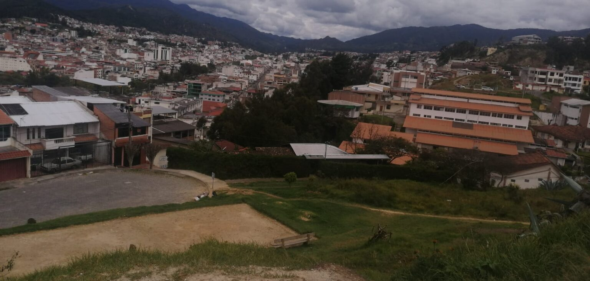

Noticias Deportivas#
Dos noticias de actualidad Deportivas extraidas de el diario “El Universo”
Pepe Auad le ofrece José Pileggi ser ‘refuerzo’ de Emelec, pero le pone una condición#

Ante el mal momento que vive Emelec, una grave situación que incluye cuatro derrotas -tres de ellas seguidas- en seis fechas del torneo 2023 de la Liga Pro, estar decimotercero en la tabla de posiciones, sufrir el peor inicio de campeonato en lo que va del siglo 21, refuerzos nacionales y extranjeros que no funcionan, un DT novato que declara que no está preocupado, y la salida de Dixon Arroyo a la MLS sin que el club reciba dinero, el socio azul José Auad hizo en redes sociales una propuesta para ayudar al club.
Auad, último en los comicios de noviembre pasado -realizados con diez meses de atraso por los amparos judiciales interpuestos por él y varios integrantes de su lista- realizó una campaña electoral que se caracterizó por ofrecimientos de todo tipo. Desde traer al uruguayo Luis Suárez -quien rechazó una oferta de River Plate-, al capitán de la selección de Bulgaria (el portero Nikolay Mihaylov), hasta dar una larga lista de posibles entrenadores que incluía al mexicano Hugo Sánnchez, el uruguayo Jorge Fosatti, y el portugués Rui Almeida.
También aseguró el empresario guayaquileño de 60 años que contaría con $50 millones de presupuesto, cifra que dijo sería entregada por 18 patrocinadores, y que remodelaría el Capwell para que el aforo del escenario aumente a más de 60.000 personas.
Último en elecciones
Los socios millonarios le dieron 496 votos a Auad, quien quedó detrás del ganador José Pileggi (2.034 votos), y de Carlos Luis Torres Briones (802) en el proceso de noviembre del 2022. Pese a la derrota en las urnas Auad reapareció el martes con un mensaje en redes sociales en el que se ofrece como ‘refuerzo’ para la directiva que lidera José Pileggi, a quien le condiciona su respaldo.
Auad publicó que traerá para Emelec al adiestrador brasileño Alberto Valentim, ganador del torneo carioca con Botafogo (2018) y de la Copa Sudamericana con Athletico Paranaense (2021) y a “un número 9 y un 10 de mucha jerarquía (esta vez no dio nombres)”.
En su texto en su cuenta en Twitter Auad hace un aclaración respecto a su propuesta:”Los traigo en la segunda vuelta (del torneo de la Liga Pro) si Pileggi me nombra presidente de la Comisión de Fútbol”. PUBLICIDAD
‘Auad no trabajó a fondo’
En el 2005, luego de una “fugaz” estancia como titular de la Comisión de Fútbol de los millonarios, Auad dejó ese cargo “por ausencia”, según una reseña de EL UNIVERSO de esa época. “El señor Auad no se ha presentado a la institución desde hace 30 días. Él ha renunciado solo, nadie lo ha presionado para que lo haga”, declaró el 5 de febrero del 2005 Jorge Arosemena Gallardo, entonces presidente de Emelec, consultado por este Diario.
En ese breve paso como directivo azul Auad aseveró que había conseguido el auspicio de dos firmas comerciales para el uniforme del equipo en el 2005. Pero sobre ese tema el 2 de febrero de ese año fue desmentido por el dirigente Jorge Bonnard. “No se ha firmado con la Cervecería y no se ha cerrado contrato para sponsor. (Auad) tuvo el tiempo necesario para realizar contrataciones. No es pecado no tener dinero, si el señor Auad no lo tenía, pues debía haberlo dicho y nos hubiésemos ahorrado tiempo. Nunca trabajó a fondo. No atinamos con él”, dijo Bonnard. (D)
¿Cómo se dio la llegada a Ecuador de Javier Burrai? El portero de Barcelona SC revela quién lo convenció para venir#
Desde su llegada a Barcelona SC, el portero Javier Burrai se ha convertido en figura indiscutible del cuadro canario e incluso fue el protagonista del título 2020 logrado ante Liga de Quito en el estadio Rodrigo Paz Delgado.
En diciembre de ese año, el guardameta se vistió de héroe en la tanda de penales que terminó con la corona torera.
Sin embargo, Burrai confesó, que en principio, que la idea de venir a jugar al país no estaba en sus planes, sin embargo, la insistencia de Juan Manuel Tévez, su compatriota que militó en Macará de Ambato, hizo que cambie de opinión y así arribó al cuadro celeste a mediados del 2018.
“Me llamó Juan Manuel Tévez que ya estaba en Macará, yo tapaba en Gimnasia y Esgrima de Jujuy y me dijo que estaban buscando portero, que ya había mandado mi nombre y yo le dije gracias, pero no”, contó el arquero.
“Cuando me dijo Macará de Ambato yo realmente sabía muy poco y después la insistencia de él en semanas y días; pensé un poco y un día desperté y dije tengo que ir a Ecuador”, añadió en conversación con TíaTV.
Luego de ser convencido, a su arribo a la capital de Tungurahua se fijó varias metas y consideró que militar en Ecuador lo ayudaría a “crecer” en lo profesional.
“Era un lugar donde podía crecer y le digo a mi novia en ese momento vamos a Ecuador, no sabíamos cómo era Ambato, no sabía a dónde iba a llegar. Para mí fue un desafío porque era una liga nueva, sentí que era un país donde podía crecer mucho”, expresó.
Otro aspecto que hizo que Burrai se convenza de llegar a la Liga Pro fue lo acontecido con el retirado portero Esteban Dreer, que fue su compañero en el Arsenal de Sarandí.
“Tenía situaciones como la de Dreer que fue compañero mío en Arsenal cuando yo tenía 18. En nuestro primer enfrentamiento, yo tapando en Macará y él en Emelec, le dije si se acuerda de mí y él lo afirmó”, concluyó el meta canario. (D)
Webgrafía#
https://www.lahora.com.ec/loja/miradores-loja-molestia-peligro/
https://www.lahora.com.ec/loja/zapotillo-emergencia-etapa-invernal/